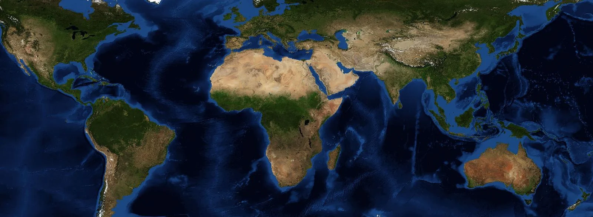

Expression de Carl Oglesby, 1969 · héritière du « tiers-monde » d'Alfred Sauvy, 1952
L'ensemble des pays d'Afrique, d'Amérique latine, d'Asie et d'Océanie marqués par la colonisation ou la dépendance, qui réclament une place plus juste dans l'ordre mondial. Une notion plus politique que géographique, héritière du tiers-monde, devenue depuis la guerre en Ukraine un enjeu que se disputent les grandes puissances.
Héritier du tiers-monde de 1952, de Bandung et des Non-alignés, le Sud global désigne moins un lieu qu'une condition : celle de pays longtemps dominés, qui contestent un ordre mondial bâti sans eux.
2
Un poids qui a basculé
Les pays émergents et en développement rassemblent 86 % de l'humanité et, depuis 2009, plus de la moitié du PIB mondial en parité de pouvoir d'achat. En 2026, les onze BRICS en pèsent 40,9 %, le G7 28 %.
3
Un acteur divisé
De la Chine à l'Inde, du Brésil aux monarchies du Golfe, ce qui les rapproche est surtout le refus de choisir un camp : le multialignement. Le Sud global pèse dans les votes, rarement comme un bloc.
02
La carte commentée
Cliquez sur un numéro ou une lettre pour lire le repère.

Image : NASA Blue Marble
Le Sud global sur la carte
Les chiffres désignent les grands acteurs, les lettres les lieux où le Sud s'est affirmé. En jaune, la ligne Brandt de 1980, qui séparait le « Nord » riche du « Sud ».
Huit acteurs
Six lieux
Ligne Brandt simplifiée d'après la carte du rapport Nord-Sud (1980). Les repères situent des pays et des lieux de réunion, pas les limites d'un bloc.
03
Comprendre
Cinq temps pour passer du mot à l'analyse.
IDu tiers-monde au Sud global
Le 14 août 1952, le démographe Alfred Sauvy publie dans l'hebdomadaire L'Observateur un article intitulé « Trois mondes, une planète ». Entre le bloc occidental et le bloc soviétique, il distingue un troisième ensemble, pauvre et souvent colonisé, qu'il compare au Tiers État de 1789.
« Car enfin ce Tiers Monde ignoré, exploité, méprisé comme le Tiers État, veut, lui aussi, être quelque chose. »
Alfred Sauvy, « Trois mondes, une planète », L'Observateur, 14 août 1952
Ce monde s'organise. En avril 1955, 29 pays d'Asie et d'Afrique se réunissent à Bandung contre le colonialisme. En 1961, la conférence de Belgrade fonde le mouvement des non-alignés. En 1964, 77 pays signent une déclaration commune à Genève, lors de la première CNUCED : c'est la naissance du G77. Le 1er mai 1974, l'Assemblée générale de l'ONU adopte son programme, un nouvel ordre économique international (NOEI) censé corriger l'échange inégal entre le Nord et le Sud.
L'expression « Sud global » apparaît en 1969 sous la plume de Carl Oglesby, opposant à la guerre du Vietnam, qui y dénonce la domination du Nord. En 1980, la commission présidée par l'ancien chancelier ouest-allemand Willy Brandt trace une ligne entre un Nord riche et un Sud pauvre ; en 1990, la Commission Sud du Tanzanien Julius Nyerere lui répond. Après la chute de l'URSS en 1991, le « tiers-monde », défini par rapport aux deux blocs, perd son sens : « Sud global » s'impose à partir des années 2000, chez les universitaires puis chez les diplomates.
IIUne notion politique plus que géographique
Le Sud global n'est pas une zone de la carte. L'Australie et la Nouvelle-Zélande, dans l'hémisphère Sud, appartiennent au « Nord » ; l'Inde et la Chine, entièrement au nord de l'équateur, se disent du Sud. Le critère est historique et politique : avoir subi la colonisation ou la dépendance, se ranger parmi les pays en développement et réclamer la réforme d'un ordre international jugé injuste.
Ce Sud pèse de plus en plus lourd. Selon le FMI, les économies émergentes et en développement rassemblent en 2026 86 % de la population mondiale et 61 % du PIB mondial calculé en parité de pouvoir d'achat (PPA). Elles ont dépassé les économies avancées en 2009. Mais en dollars courants, elles ne produisent que 42 % de la richesse mondiale : le rattrapage est réel, il reste incomplet.
Tiers-monde, émergents, Sud global : ne pas confondre
Le tiers-monde se définissait face aux deux blocs de la guerre froide. Les pays émergents, expression lancée en 1981 par l'économiste Antoine van Agtmael, désignent des économies en rattrapage. Le Sud global, lui, est une identité revendiquée : on peut être émergent sans s'en réclamer, comme la Corée du Sud, ou s'en réclamer en étant une très grande puissance, comme la Chine.
La Chine est en effet le plus grand pays à revendiquer cette identité. En septembre 2023, à la tribune de l'ONU, son vice-président Han Zheng la présente comme un « membre naturel du Sud global ». Mais en septembre 2025, Pékin renonce à réclamer de nouveaux avantages réservés aux pays en développement dans les négociations de l'OMC : deuxième économie du monde, elle peut difficilement se dire pauvre.
IIIBRICS, G20, multialignement : le Sud en actes
En 2001, l'économiste de la banque Goldman SachsJim O'Neill invente l'acronyme BRIC pour désigner quatre grands émergents promis à une forte croissance : Brésil, Russie, Inde, Chine. Les quatre pays en font un club politique, réuni pour la première fois en 2009, rejoint par l'Afrique du Sud en 2011. En 2014, ils créent leur propre banque, la Nouvelle banque de développement. Le groupe s'élargit le 1er janvier 2024 à l'Égypte, à l'Éthiopie, à l'Iran et aux Émirats arabes unis, puis à l'Indonésie en janvier 2025 ; dix pays, du Nigeria au Vietnam, sont devenus partenaires. Les onze membres réunissent près de la moitié de l'humanité et 40,9 % du PIB mondial en PPA (FMI, 2026).
Le Sud gagne aussi sa place dans les institutions existantes. Le 9 septembre 2023, à New Delhi, l'Union africaine devient membre permanent du G20, au même titre que l'Union européenne. Le Brésil (2024) puis l'Afrique du Sud (2025) le président : le sommet de Johannesburg, le premier en Afrique, se tient en novembre 2025 malgré le boycott des États-Unis. L'Inde, qui réunit entre 2023 et 2024 trois sommets virtuels de la « Voix du Sud global », se pose en porte-parole.
La doctrine commune est le multialignement : ne s'enfermer dans aucun camp. L'Inde est à la fois membre des BRICS, de l'OCS et du Quad avec Washington : c'est l'héritage du non-alignement, sans son idéologie. Ce Sud veut réformer l'ordre mondial plus que le renverser : plus de voix au FMI et à la Banque mondiale, nés à Bretton Woods en 1944, des sièges permanents au Conseil de sécurité, moins de dépendance au dollar. Mais la dédollarisation reste lente : le dollar représentait encore 56,7 % des réserves de change mondiales fin juin 2026, et la déclaration de New Delhi n'évoque aucune monnaie commune.
IVGuerres, dette, climat : les griefs du Sud
L'invasion russe de l'Ukraine révèle le Sud global aux Occidentaux. Le 2 mars 2022, 141 pays condamnent l'agression à l'Assemblée générale de l'ONU, mais 35 s'abstiennent, dont la Chine, l'Inde et l'Afrique du Sud. Surtout, aucun pays d'Afrique ni d'Amérique latine n'applique les sanctions occidentales, et l'Inde devient un grand acheteur de pétrole russe. Le ministre indien des Affaires étrangères, Subrahmanyam Jaishankar, résume ce sentiment en juin 2022 :
« L'Europe doit sortir de cet état d'esprit selon lequel les problèmes de l'Europe sont les problèmes du monde, mais les problèmes du monde ne sont pas ceux de l'Europe. »
Subrahmanyam Jaishankar, forum Globsec de Bratislava, 3 juin 2022 (notre traduction)
La guerre à Gaza, après le 7 octobre 2023, renforce le reproche d'un « deux poids, deux mesures ». Le 12 décembre 2023, 153 pays votent pour un cessez-le-feu humanitaire à l'Assemblée générale ; le 29 décembre, l'Afrique du Sud saisit la Cour internationale de justice en accusant Israël de violer la convention sur le génocide. Le soutien à l'Ukraine s'érode ensuite : 93 voix seulement en février 2025, 107 en février 2026.
Les griefs sont aussi économiques. Selon la CNUCED (octobre 2026), les pays en développement ont versé 995 milliards de dollars d'intérêts sur leur dette publique en 2025, près de trois fois plus qu'en 2010, et empruntent en moyenne à 5,2 %, contre 2,2 % pour les pays développés. Le climat nourrit le même sentiment d'injustice : les pays du Sud, qui ont le moins émis de gaz à effet de serre, subissent le plus les catastrophes. Ils obtiennent à la COP27 un fonds pour les pertes et dommages, mais la COP29 de Bakou (2024) ne promet que 300 milliards de dollars par an d'ici 2035, quand ils en réclamaient 1 300.
VUn bloc introuvable ?
Le Sud global reste un ensemble très hétérogène. Quoi de commun entre la Chine, deuxième économie du monde, et le Burundi ? Entre les monarchies pétrolières du Golfe et les petits États insulaires ? Ses membres sont aussi rivaux. La Chine et l'Inde, qui se sont affrontées à la frontière himalayenne dans la vallée de Galwan en juin 2020, se disputent le leadership du Sud. L'Iran et les Émirats, tous deux membres des BRICS, ont des positions opposées depuis la guerre de 2026 autour du détroit d'Ormuz : la réunion des ministres des Affaires étrangères du groupe, en mai 2026, s'achève sans communiqué commun.
La notion elle-même est critiquée. Pour Joseph Nye, en 2023, elle relève davantage du slogan politique que de la description, puisque la majorité de l'humanité vit au nord de l'équateur. D'autres y voient un mot fourre-tout, qui permet aux grandes puissances du Sud, la Chine en tête, de parler au nom de pays plus faibles. Le politiste Bertrand Badie propose une autre lecture dans Le Temps des humiliés (2014) : ce qui unit ce Sud, c'est la mémoire de la domination et le rejet d'une hiérarchie du monde imposée par d'autres.
Ni bloc, ni alliance
Le Sud global n'a ni traité, ni secrétariat, ni chef. Ce n'est pas non plus un choc des civilisations entre l'Occident et le reste du monde : chacun négocie pour soi. En février 2026, l'Inde s'engage ainsi à réduire ses achats de pétrole russe pour obtenir des États-Unis une baisse de leurs droits de douane de 50 à 18 %.
04
Les chiffres
Les données clés, datées et sourcées.
86 %de la population mondiale vit dans les économies émergentes et en développement en 2026FMI, octobre 2026
40,9 %du PIB mondial en PPA pour les onze pays des BRICS en 2026, contre 28 % pour le G7FMI, octobre 2026
3,7 Mdde personnes vivent dans 51 pays qui consacrent plus aux intérêts de la dette qu'à la santé ou à l'éducationCNUCED, octobre 2026
134pays forment le « Groupe des 77 et la Chine », la grande coalition du Sud à l'ONU, née en 1964G77, 2026
Le grand basculement
Part du PIB mondial en parité de pouvoir d'achat, en %, 1992-2031
Source : FMI, World Economic Outlook, octobre 2026 (estimations à partir de 2025, projections après 2026). BRICS : les onze pays membres, Arabie saoudite comprise, calculés sur toute la période.
L'Ukraine à l'ONU : un soutien qui s'effrite
Votes des 193 États à l'Assemblée générale, résolutions sur l'Ukraine
Source : ONU, comptes rendus de l'Assemblée générale (résolutions sur l'agression russe en 2022 et 2023, sur la paix en Ukraine en 2025 et 2026).
Le nombre, la richesse, la monnaie
Part du monde, en %, pour les BRICS et le G7
Sources : Banque mondiale (population, 2024) ; FMI, octobre 2026 (PIB, 2026). En dollars courants, l'avance du G7 demeure.
05
Qui veut quoi ?
Six acteurs du Sud global, leurs ambitions et leurs limites.
🇮🇳L'Inde
Ce qu'elle veut
Être reconnue comme la voix du Sud et obtenir un siège permanent au Conseil de sécurité, sans rompre avec l'Occident.
Moyens et limites
Le premier pays du monde par la population, 7 % de croissance attendue en 2026. Mais sa rivalité avec la Chine et le Quad limitent sa marge.
🇨🇳La Chine
Ce qu'elle veut
Prendre la tête du Sud pour contester l'ordre dominé par les États-Unis et diffuser ses propres initiatives mondiales.
Moyens et limites
Deuxième économie mondiale, routes de la soie, crédits. Mais son poids inquiète ses partenaires et brouille son statut de pays en développement.
🇧🇷Le Brésil
Ce qu'il veut
Réformer la gouvernance mondiale et porter la voix des pays forestiers dans les négociations sur le climat.
Moyens et limites
Présidences du G20 (2024), des BRICS et de la COP30 (2025). Mais une influence surtout régionale, et le refus de choisir entre Washington et Pékin.
🇿🇦L'Afrique du Sud
Ce qu'elle veut
Incarner l'Afrique au sein des BRICS et défendre le droit international contre le « deux poids, deux mesures ».
Moyens et limites
Présidence du G20 en 2025, plainte contre Israël devant la CIJ. Mais 1 % de croissance prévue en 2026 et l'exclusion du G20 par Washington.
🛢️Les monarchies du Golfe
Ce qu'elles veulent
Diversifier leurs partenaires au-delà des États-Unis, vendre leur pétrole à l'Asie et attirer les investissements.
Moyens et limites
Fonds souverains, médiations, Émirats membres des BRICS. Mais leur sécurité repose toujours sur l'armée américaine.
🌍L'Union africaine
Ce qu'elle veut
Deux sièges permanents au Conseil de sécurité, un meilleur accès aux financements et l'allègement de la dette.
Moyens et limites
55 États membres, un siège au G20 depuis 2023. Mais des membres qui votent rarement d'une seule voix à l'ONU.
06
Dans une copie
Comment mobiliser la notion en dissertation.
Une accroche
Le 24 février 2026, quatre ans après l'invasion russe, 107 pays seulement votent à l'ONU une résolution pour une paix juste en Ukraine, contre 141 en 2022. L'Inde, la Chine, le Brésil, et même les États-Unis, s'abstiennent.
Un fait actuel qui pose la question du sujet : le Sud global est-il un acteur nouveau de l'ordre mondial, ou le signe d'un monde fragmenté où chacun joue sa partie ?
L'idée-force
Le Sud global est moins un bloc qu'une posture : celle de pays qui, forts de leur poids démographique et économique, refusent de choisir un camp et réclament une réforme de l'ordre mondial plutôt que son renversement.
Nuance indispensable : la notion masque des écarts immenses de richesse et de puissance, et sert aussi les ambitions de la Chine et de l'Inde, qui se disputent son leadership.
Des sujets où la placer
Le Sud global existe-t-il ?
Du tiers-monde au Sud global : continuité ou rupture ?
Les BRICS, une alternative à l'ordre occidental ?
Vers un monde post-occidental ?
La gouvernance mondiale est-elle encore occidentale ?
L'Inde, puissance du Sud ?
Nord et Sud, une grille de lecture encore pertinente ?
Références à citer
Alfred Sauvy, « Trois mondes, une planète », L'Observateur (1952) : la naissance du tiers-monde.
Commission Brandt, Nord-Sud : un programme de survie (1980) : la ligne Nord-Sud.
Jim O'Neill, Building Better Global Economic BRICs (Goldman Sachs, 2001) : l'acronyme BRIC.
Bertrand Badie, Le Temps des humiliés (2014) : l'humiliation comme moteur.
Subrahmanyam Jaishankar, The India Way (2020) : la diplomatie indienne du multialignement.
Didier Billion et Christophe Ventura, Désoccidentalisation (2023) : le recul de l'Occident.
CNUCED, A World of Debt 2026 : le poids de la dette du Sud.
Les erreurs à éviter
En faire un espace géographique. L'Australie est au « Nord », la Chine se dit du « Sud ».
En faire un bloc anti-occidental. La plupart de ses membres veulent réformer l'ordre mondial, pas le renverser, et commercent avec tous.
Confondre Sud global et BRICS. Les BRICS comptent onze membres ; le G77 en compte 134.
Oublier la Chine. Elle se dit du Sud, mais c'est la deuxième économie mondiale et le créancier de nombreux pays pauvres.
Alfred Sauvy, « Trois mondes, une planète », L'Observateur, 14 août 1952 ; Commission Brandt, North-South: A Programme for Survival, Pan Books, 1980.
Photo de l'index : Prime Minister's Office (Inde), dirigeants des BRICS devant le Bharat Mandapam de New Delhi, 12 septembre 2026, licence GODL-India, via Wikimedia Commons. Carte : NASA Blue Marble.